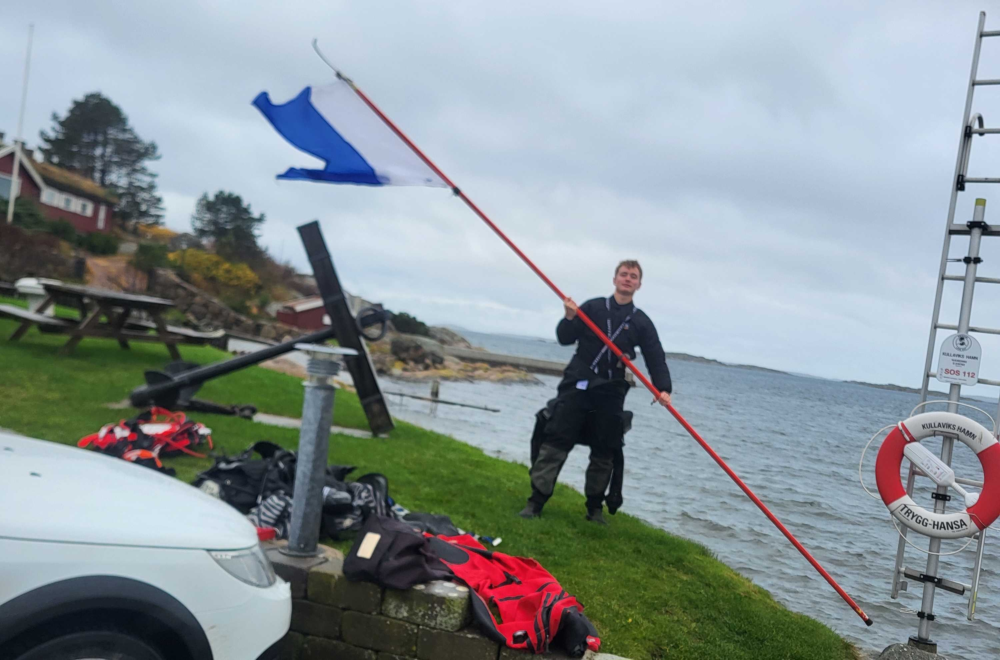
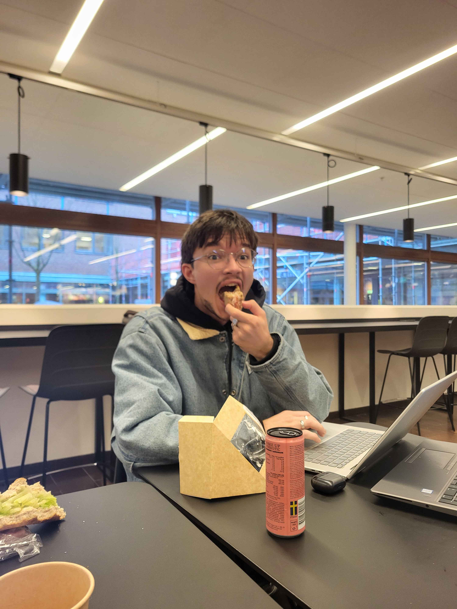
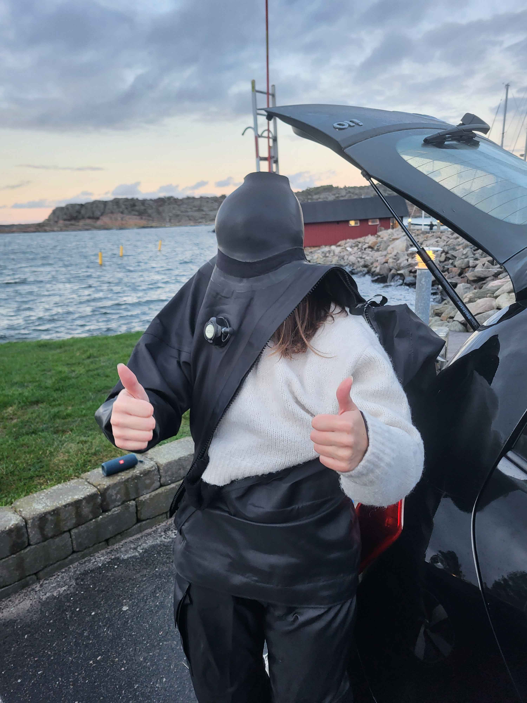
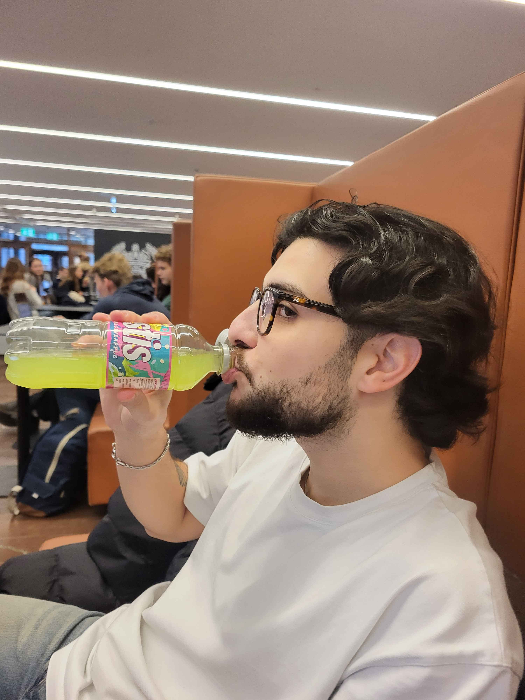

Lukas Lundin
Computer Engineering Student
Timeline
2020
Started programming as a hobby, mainly using Python, and simpler web-based interfaces.
2023
Started studying computer engineering at Chalmers University of Technology.
2024
Took a break from my studies to do 15 months of military service, working with data communications.
2025
Taking a variety of courses to widen my skills and portfolio.
2026
Continuing studies at Chalmers from january 2026.
Experiences
Hobby Projects
I've tried out a lot of different languages and workflows through hobby projects.
From embedded C# and C++ programming with arduinos, node.js and flask web-servers
with raspberry pi and web-based interfaces using js, html and css. This has given
me a wide arsenal of tools and experiences that has proven very handy when stepping
into new areas during my studies.
Military Service
During my military service I was specialized in data communications and information
technology, here I've had the chance to work practically with servers and routing.
As well as learn how to work in- and lead a group through stressful situations,
and critical, time-sensitive problem-solving.
About me
Career
I am currently studying Computer Engineering at Chalmers University of Technology,
as well as working part-time as a guide at the National Science Center, Universeum.
I have recently gotten myself particularly interested in low-level programming,
which is what my studies mainly revolve around, but I've read bonus courses in
C-programming as well, to make sure I stay sharp in this area. My hobbies have long
included different technical projects, from microprocessors to web-pages and databases,
which is where I've learned most of my skills when it comes to different languages and
models. But apart from technical projects I also have a great interest in marine biology,
which I have both studied and worked with in the past.
Childhood
I've always been a curious person, wanting to explore and learn, like when I was six and tried
digging a hole to china in my backyard after some kids at school told me they did it,
only to hit a powerline and make the whole street's lights flash for a couple minutes as I went inside and
pretended I had been drawing the whole time. I think this curiosity drove me into Marine Biology, while my fathers
technical interests made me interested in learning about computers and eventually hopping on the engineering track.
Future
My main goal for my future career is mixing both biology and computer engineering. Since I am greatly interested in both fields,
I want to have make a career in specialized lab-equipment for marine settings. And to do this I am planning on continuing my studies
in Marine Biology after my engineering-degree, although this will most likely only be a part-time thing.
Gallery

Taken when kayaking with a couple of friends outside Lysekil, where I used to live.

Me and two colleagues on top of a Strv 122A.

Two smallspotted catsharks released into the wild as part of a sustainability project where I helped raise them.

A friend holding a diving-flag attached to a rescue-pole before a dive.

Me and a colleague in front of a Strv 102 (centurion).

A friend of mine who asked if he could be in my project.

One of my friends, stuck in the neckseal of her drysuit.

Taken while camping with my friends.

Another friend of mine who asked if he could be in my project.